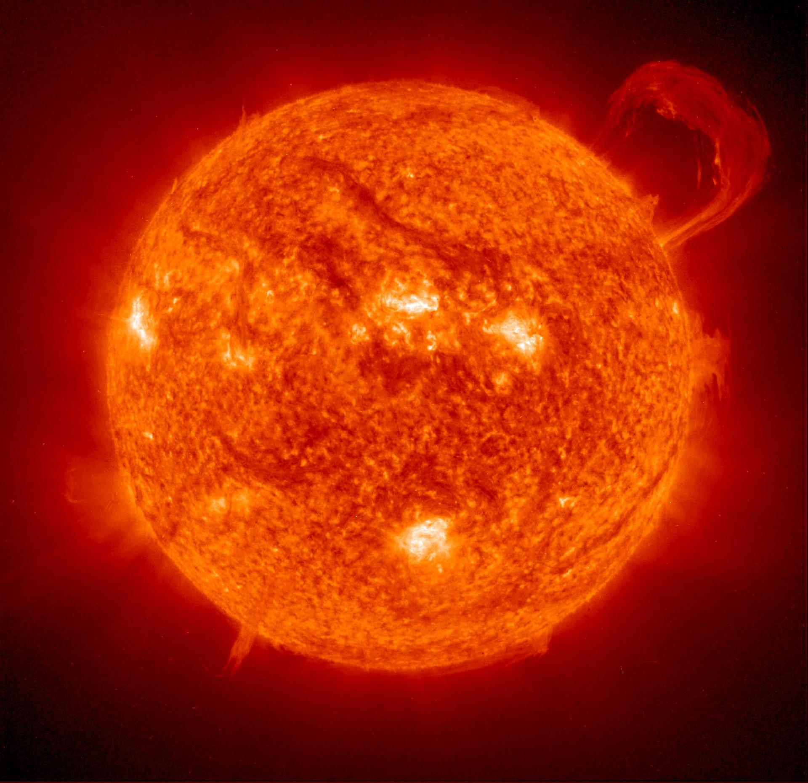
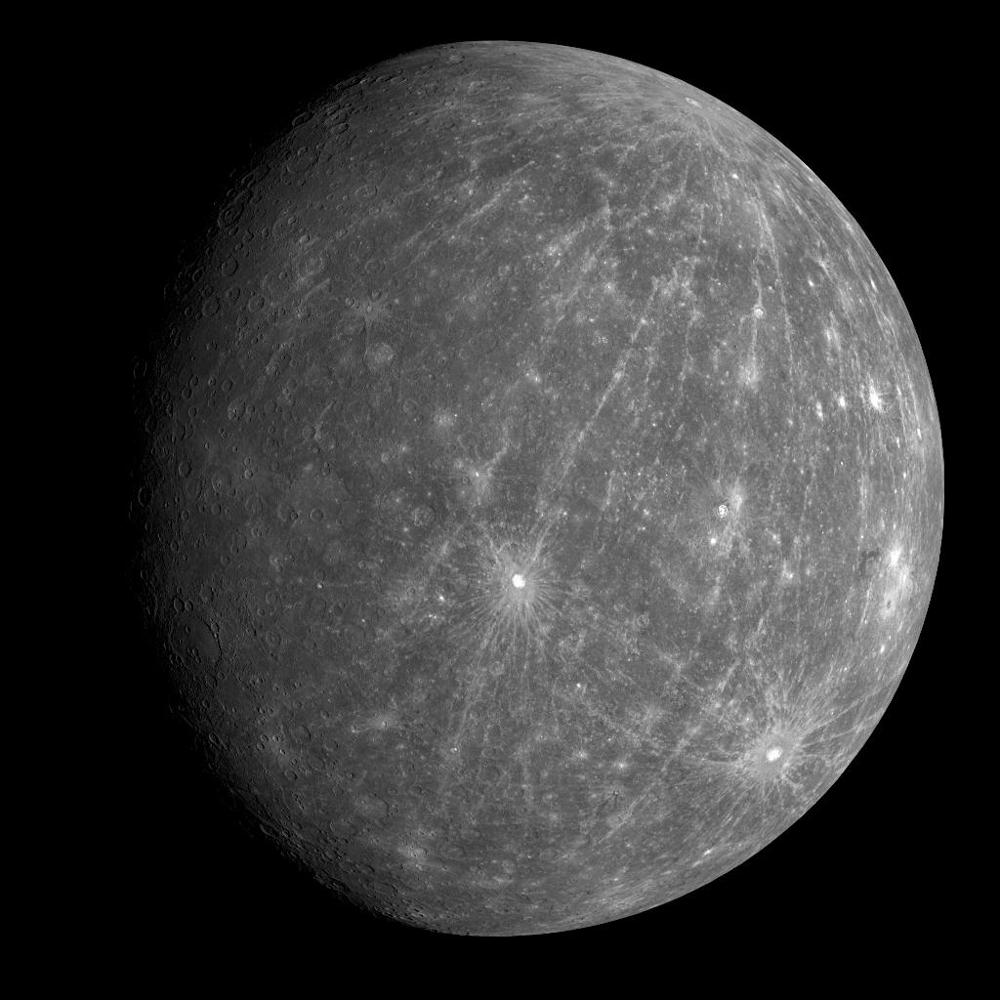
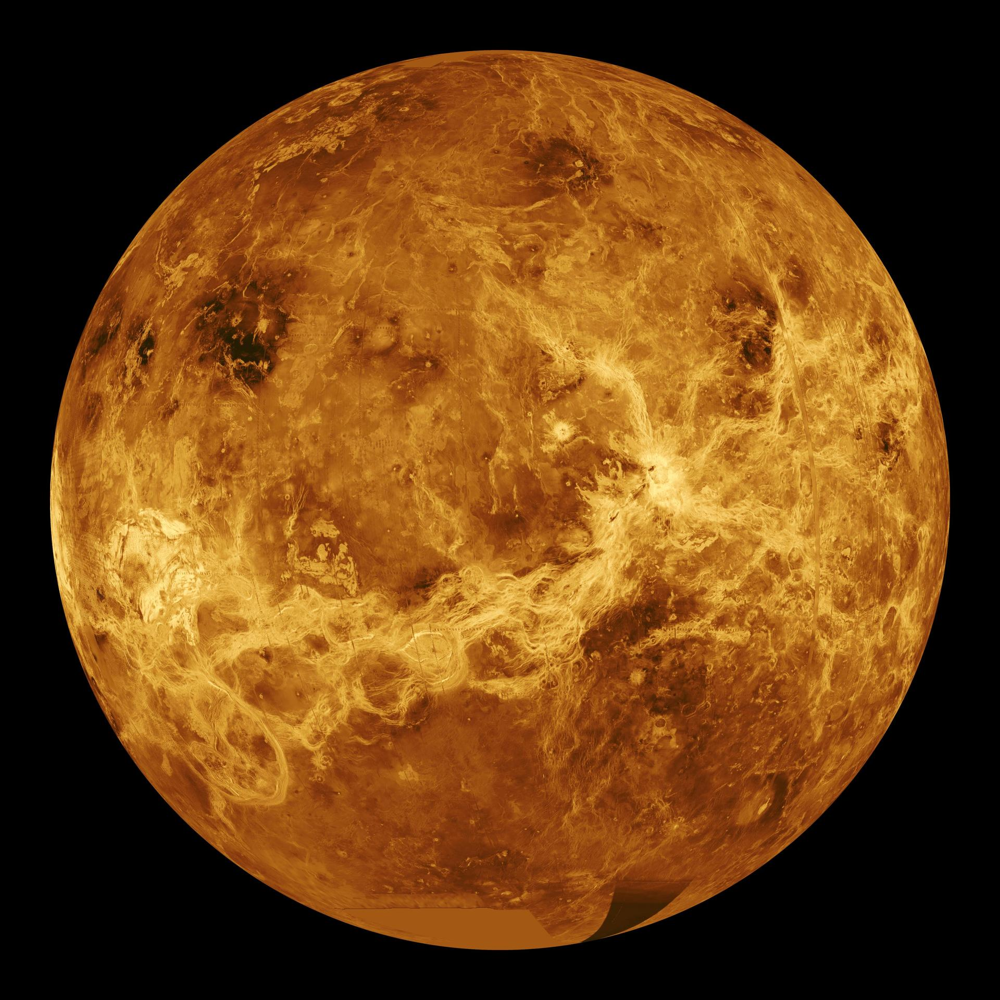
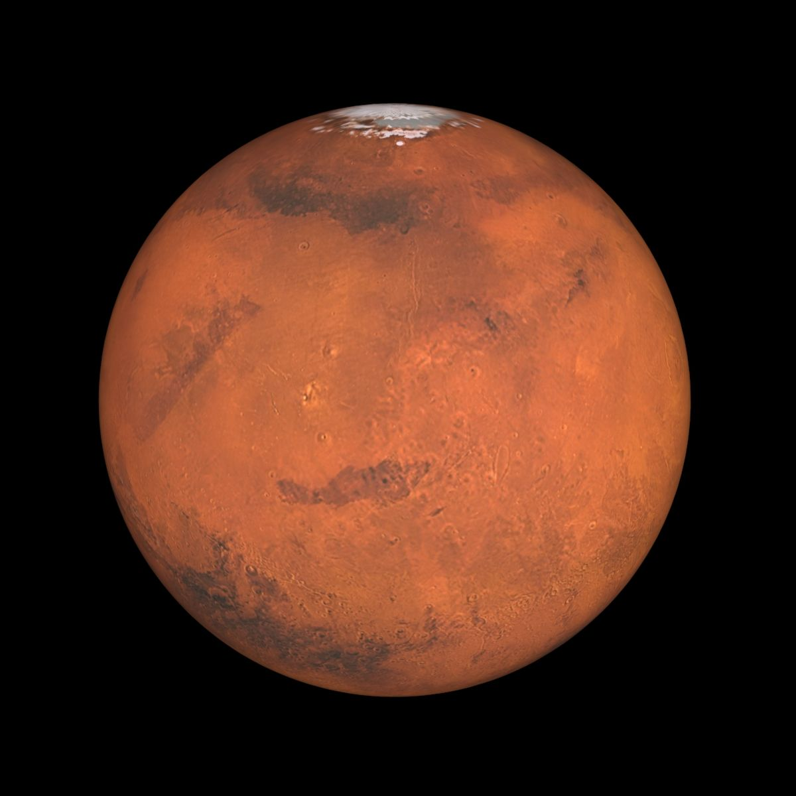
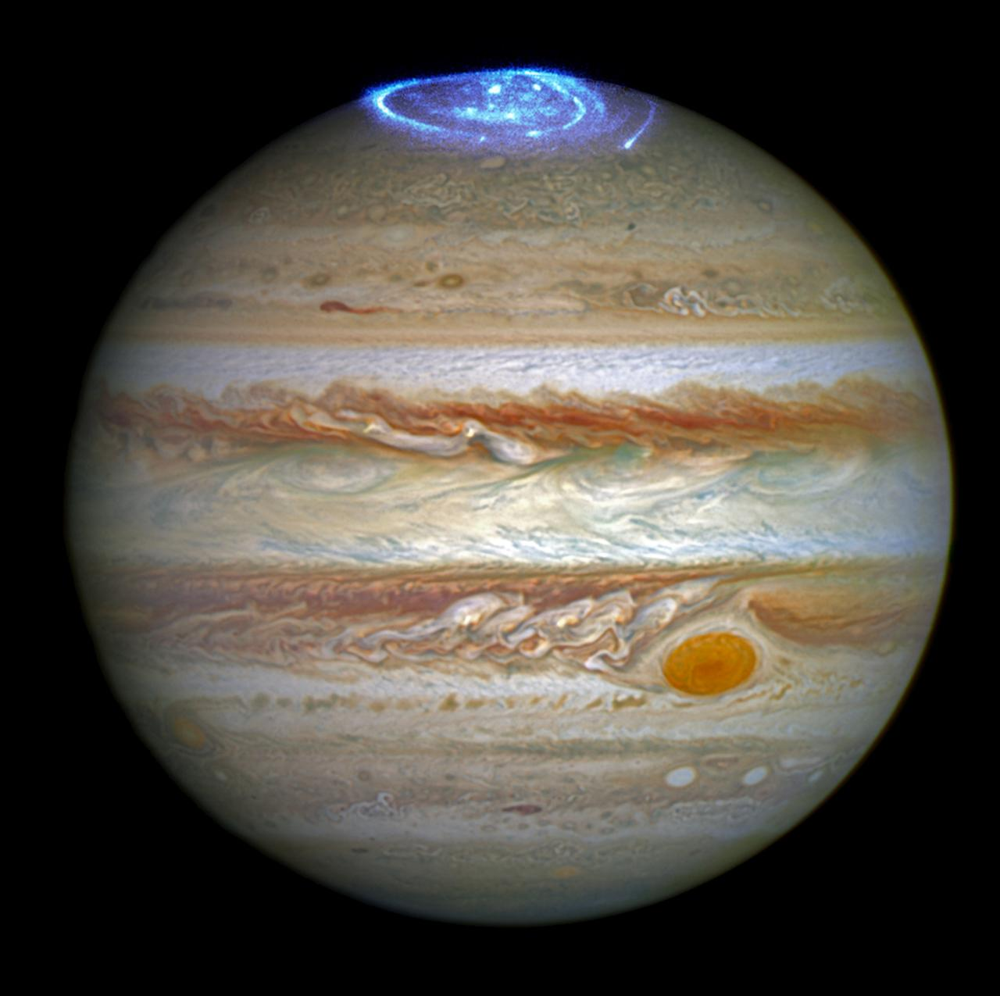
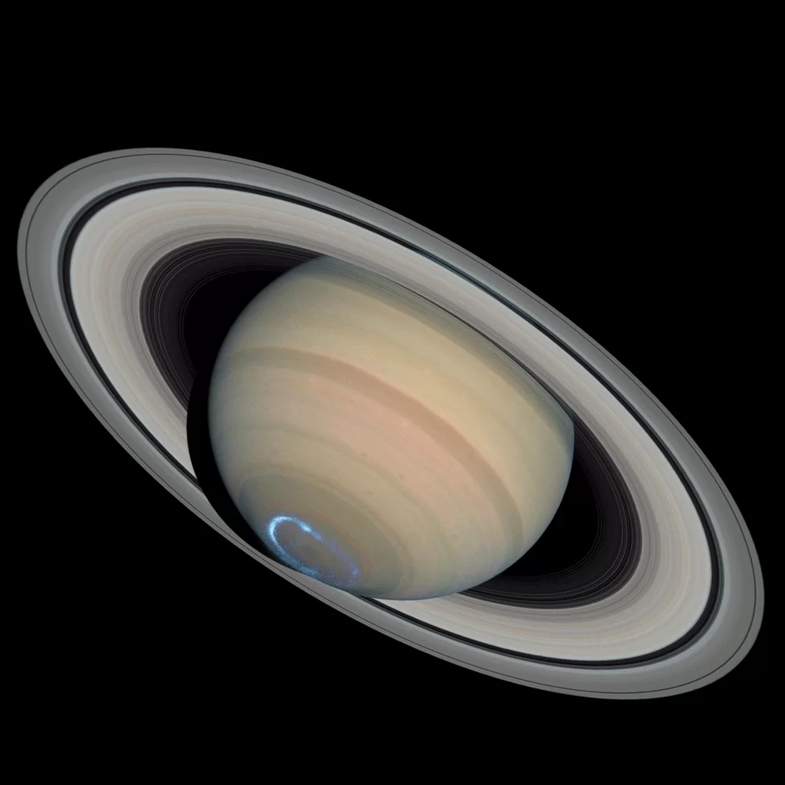
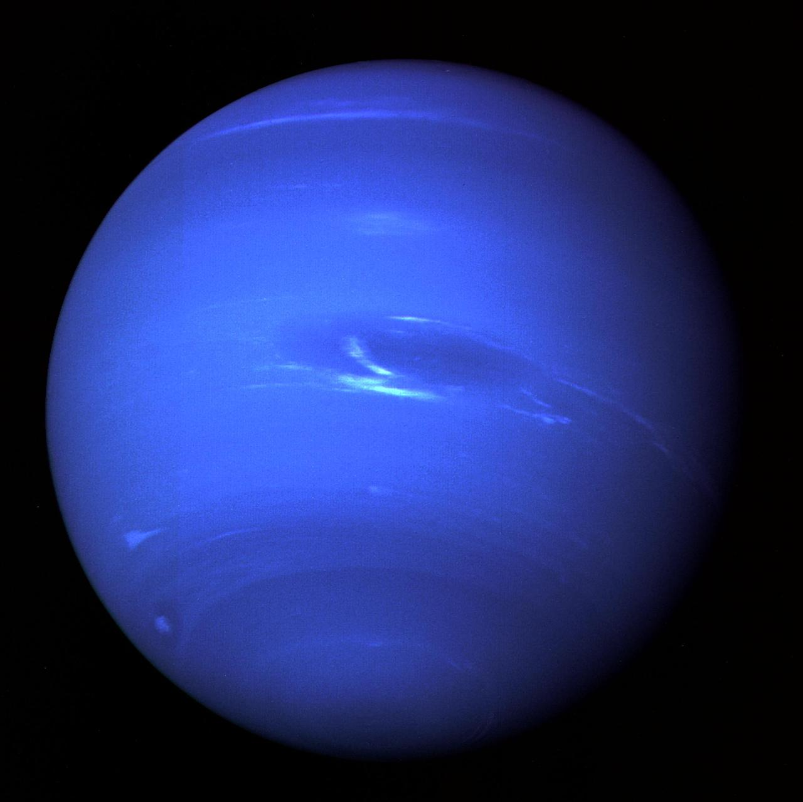
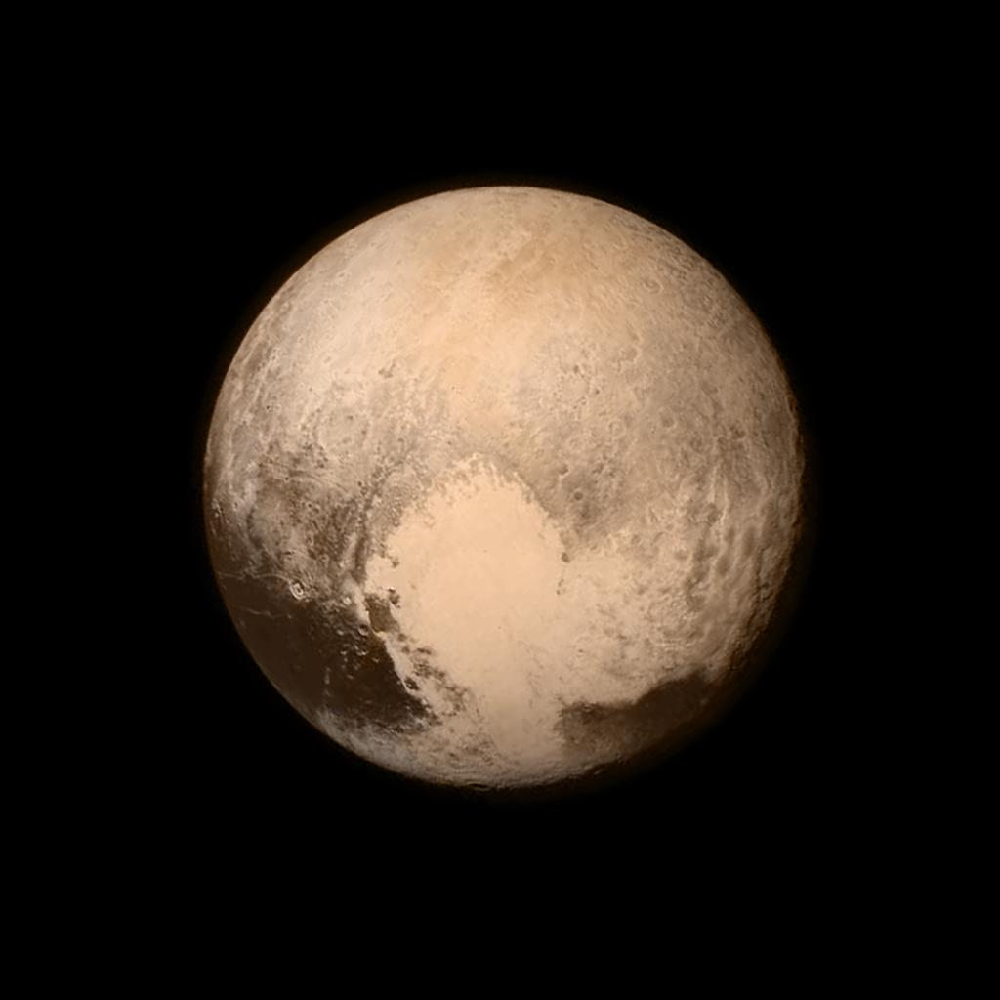

SOLAR SYSTEM EXPLORER
☀️ THE SUN
The Sun is a huge star at the center of our Solar System. It gives off light and heat, and its gravity keeps all the planets and other objects moving around it.
- Diameter: ~1,392,700 km
- Composition: Hydrogen (~74%), Helium (~24%), trace heavier elements
- Orbital period: N/A
- Rotation: ~25 to 35 days (differential rotation; equator spins fatoster than poles)
- Notes: the Sun orbits the center of the Milky Way galaxy in ~225 to 250 million years.

☿ MERCURY
Mercury is the closest planet to the Sun. It is small, rocky, and has extreme temperatures—very hot during the day and freezing at night. It has almost no atmosphere, so it cannot trap heat.
- Diameter: 4,879 km
- Composition: Rocky (iron core, silicate crust)
- Year length: 88 Earth days
- Rotation: 58.6 Earth days
- Notes: Slow rotation and extreme temperature changes due to thin atmosphere.

♀ VENUS
Venus is similar in size to Earth but has a thick, toxic atmosphere made mostly of carbon dioxide. It is the hottest planet because of a strong greenhouse effect that traps heat..
- Diameter: 12,104 km
- Composition: Rocky (silicate rock, iron core)
- Year length: 225 Earth days
- Rotation: 243 Earth days (retrograde, spins backward)
- Notes: One day on Venus is longer than its year.

🌍 EARTH
Earth is the only known planet that supports life. It has liquid water, a breathable atmosphere, and a stable climate. About 71% of its surface is covered by oceans.
- Diameter: 12,742 km
- Composition: Rocky (iron core, mantle, crust; oceans and atmosphere)
- Year length: 365.25 days (1 year)
- Rotation: 24 hours
- Notes: Only known planet with life and liquid surface water.

♂ MARS
Mars is known as the “Red Planet” because of its iron-rich surface. It has the largest volcano in the solar system and evidence that it once had liquid water.
- Diameter: 6,779 km
- Composition: Rocky (iron-rich surface, silicate mantle)
- Year length: 687 Earth days (~1.88 years)
- Rotation: 24.6 hours
- Notes: Similar day length to Earth; thin atmosphere

♃ JUPITER
Jupiter is the largest planet in the Solar System. It is a gas giant made mostly of hydrogen and helium. It has a famous Great Red Spot, a massive storm larger than Earth.
- Diameter: 139,820 km
- Composition: Gas giant (mostly hydrogen and helium)
- Year length: ~11.86 Earth years
- Rotation: ~9.9 hours (fastest rotating planet)
- Notes: Strong magnetic field and massive storm systems.

♄ SATURN
Saturn is famous for its beautiful ring system made of ice and rock particles. It is also a gas giant and has many moons, including Titan, which has a thick atmosphere.
- Diameter: 116,460 km
- Composition: Gas giant (hydrogen, helium)
- Year length: ~29.46 Earth years
- Rotation: ~10.7 hours
- Notes: Famous ring system made of ice and rock particles.

♅ URANUS
Uranus is an ice giant with a pale blue color due to methane gas in its atmosphere. It is unique because it rotates on its side, likely due to a massive collision in the past.
- Diameter: 50,724 km
- Composition: Ice giant (water, ammonia, methane ices + hydrogen/helium atmosphere)
- Year length: ~84 Earth years
- Rotation: ~17.2 hours (retrograde tilt)
- Notes: Rotates almost on its side (~98° tilt).

♆ NEPTUNE
Neptune is the farthest planet from the Sun. It is a very cold, blue ice giant with powerful winds that can reach over 2,000 km/h, making them the fastest in the Solar System.
- Diameter: 49,244 km
- Composition: Ice giant (water, ammonia, methane ices)
- Year length: ~164.8 Earth years
- Rotation: ~16.1 hours
- Notes: Strongest winds in the Solar System.

🪐 Pluto
Pluto is a dwarf planet located in the Kuiper Belt. It is small, icy, and has a heart-shaped glacier on its surface. It was once considered the ninth planet but is now classified as a dwarf planet.
- Diameter: 2,377 km
- Composition: Ice and rock (nitrogen ice, water ice, methane ice)
- Year length: ~248 Earth years
- Rotation: ~6.4 Earth days
- Notes: Has a heart-shaped glacier and an elliptical, tilted orbit.
